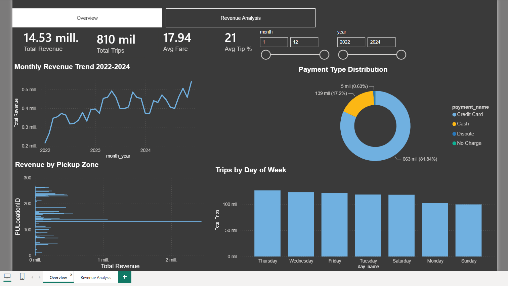
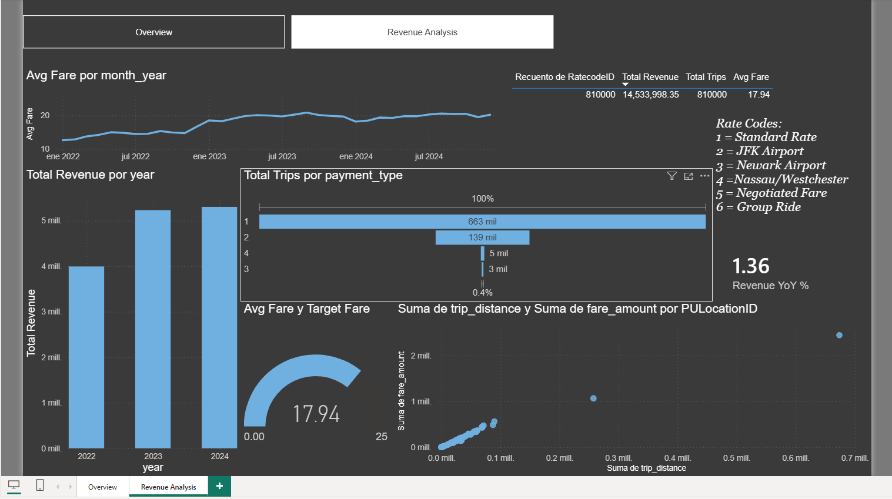

NYC Taxi Analytics
Pipeline end-to-end · completadoPipeline de portafolio sobre ~119M viajes reales de taxis amarillos de Nueva York (2022–2024): ingesta vía API, validación en Excel, limpieza y modelo de Machine Learning en Python, modelado relacional en PostgreSQL y dashboard ejecutivo en Power BI.
119M registros analizados
26.7M filas en PostgreSQL
Dashboard ejecutivo en Power BI
Modelo ML de propinas
Ver detalle técnico: pipeline, capturas y hallazgos Ocultar detalle técnico
01
API REST
Completado02
Excel + Power Query
Completado03
Python EDA + ML
Completado04
PostgreSQL
Completado05
Power BI
Completado0registros reales procesados
0filas cargadas en PostgreSQL
0revenue generado en JFK Airport
0R² del modelo de propinas (RandomForest)
0de los pagos son con tarjeta
0del volumen de viajes es en Manhattan
Capturas reales del reporte de Power BI (modelo cargado con una muestra de 810,000 viajes vía PostgreSQL):
Overview

Ver tamaño completo ↗Revenue Analysis

Ver tamaño completo ↗- Modelo RandomForestRegressor predice propina por viaje con RMSE de $2.12 USD.
- La hora pico de demanda es las 18:00 hrs, con 24,614 viajes registrados.
- La hora más rentable por viaje es las 5:00 am, con $35 de tarifa promedio.
- Carga masiva a PostgreSQL con
COPY FROM STDIN: ~300,000 filas/segundo.